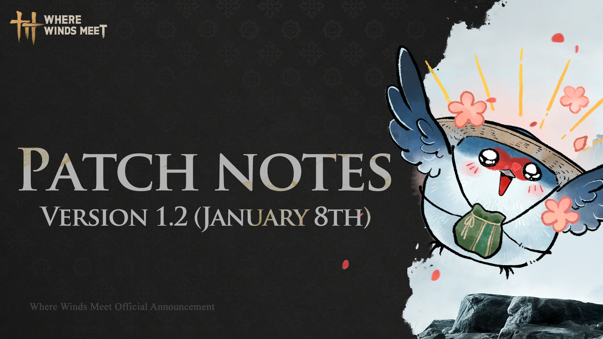

Version 1.2 (January 8th) Bug fixes and Optimizations

Introduced exploration in the [Online Mode], enabling players to collect Treasure Chests and Oddities, as well as experience certain puzzle gameplay. Rewards and completion progress are synced with the [Solo Mode].
Introduced [Quest Replay] for the Qinghe and Kaifeng Main Chapters, as well as some Lost Chapters.
Customize the Martial Art Effect
• Starting January 9, 2026, players can visit "Appearance → Extras → Martial Arts Effects" to customize • Martial Art Effects for individual skills—showcasing their unique style with every strike.
Painted Boat Cruise Update
• "Painted Boat" gets a refresh! "Towering Masters" is available during "Mirage Boat". The "Boat Owner Customization" feature will follow soon, enhancing shared adventures.
Monthly Fund Upgrade
• Starting January 9, 2026, the "Monthly Fund" receives a major upgrade:
• "VIP Shop" and "Must-Haves List" are added, offering exclusive goods and rights when the "Monthly Fund" is activated.
• "VIP Shop": New arrivals—[Dreamtint Kit] and [Transformation Pill], purchasable with [Echo Jade], valid for 30 days. Stock refreshes with each "Monthly Fund" cycle (for example, every 30 days during continuous subscription). [Dreamtint Kit] can be used to increase "Dye Plan" capacity.
• "Must-Haves List": Bookmark time-limited "Shop" items to create your personal "Shopping List"—buy in batches with one tap, never miss a favorite!
Dye Update
• The number of "Outfit → Dye Plan" can now be expanded using [Dreamtint Kit].
• After the update, players who registered between server launch and January 9, 2026, 04:50 and have logged in before January 9, 2026, 04:50 will receive 2 [Dreamtint Kit] (30-day validity), each unlocking one "Outfit → Dye Plan" slot for [Top] and [Bottom].
Bag Optimization
• More optimizations for Bag sorting.
• Retroactive gear now has a "Favorite" button, and for retroactive gear that's already been retrieved, the "Compendium" interface has added an "Gear Retrieval" button.
• The "Bag→ Items" interface is now split into "Common Items" and "Development Materials", with new "Filter" options.
Arena Practice
• "Arena Practice" is added to Wandering Paths - Arena, including free practice, deflection, defense-breaking mystic skills, golden skills, control breaking, and mystic skill coordination. Players can familiarize themselves with the "Arena" combat rules. Free combo practice is also supported.
• Improved the user experience for [Inner Way Conversion]. After completing the conversion, the [Inner Way Notes] will be automatically locked to prevent accidental recycling.
• Enhanced the Execution Skill of the Boss [Heartseeker], giving players more time to react.
• Improved the defeat experience of the Sufferer challenge in the [Midnight Blades Sect Rules – Midnight Judgment]: players will now lose 10 points upon defeat.
• Optimized the tracking interaction for the Sufferer in [Midnight Blades Sect Rules – Midnight Judgment]. Online players are prioritized in the display, and the member limit for the [Sect – Sufferer] has been increased.
• Enhanced the team invitation experience in [Hero's Realm], now supporting differentiation between [Wandering Paths Hero's Realm] and [Guild Hero's Realm] invitations.
• Added a quick chip exchange feature to the Wandering Paths [Leisure – Mahjong Maestro]. Players can now go to the [Gold Leaf Game Chip] item interface and quickly exchange via the [Commerce Coins Exchange] button.
• Improved chat functionality for the Wandering Paths [Leisure – Madiao Cards], enabling players to chat while spectating.
• Optimized the control feel for the character's [Stroll].
• Added controller operation hints for the character's [Stroll].
• Refined the [Multi-player Action and Emote] initiation process for both parties.
• Optimized interaction in the [Diagram] feature, allowing interactive buttons to be shown directly within the [Diagram] area.
• Optimized the settlement notifications for [Spar], with related messages now sent to the [Chat - Nearby Channel].
• Enhanced the experience for [Group Diagnosis]. During diagnosis, invitations to [Spar] are disabled.
• Optimized exploration for some Co-op in the [Compendium – Collection], now supporting sharing of newly triggered [Compendium - Collection] within the team.
• Added [Settings - Move Stick Position] on the mobile client, allowing players to choose between [Motion Sensor] and [Fixed Position].
• Improved the Open-world level progression. Monster levels are region-capped; non-boss monsters’ level and strength now align with the solo player's progress within that region.
• Optimized the [Gear Bag] experience. Gear with basic starting affixes can now be recycled through the [Gear Recycling] into stackable items—Epic/Legendary Ammolite/Ultimate Melodic Stones, corresponding to the gear's tier. The same effect is also supported during gear tuning.
• Lowered the learning threshold for [Gear Affix]. On the Gear info overlay and Tune interface, clicking on an affix to view its description and status.
• Improved the acquisition of [Martial Note]. Players can now recycle Martial Notes from any path for free and without loss into a [Custom Martial Note Chest], which can then be exchanged freely for [Martial Notes] from other paths.
• Enhanced the acquisition experience for [Mystic Skill Breakthrough Materials]. Having reached a certain number of gathering attempts, players are guaranteed to receive these materials.
• Optimized the display cap for the [Endurance Bar] to 160 points.
• Refined the weapon counter-defense rules: some weapon skills cannot be deflected or defended, and a golden visual indicator has been added.
• Adjusted the camera behavior when locking onto enemies with the [Martial Art - Umbrella].
• Enhanced the sound effects for both Light Attack and Charging Stance of [Martial Art - Rope Dart].
• Refined the feel of the Charged Skill for the [Nameless Sword]—players can now charge first and then lock direction toward the enemy when releasing sword energy.
• Refined the transition into the [Zenith Sword] follow-up after a charged skill for the [Strategic Sword], when equipped with the Inner Way [Sword Horizon].
• Improved the landing animation for certain skills of the Martial Arts [Inkwell Fan] and [Vernal Umbrella] when used mid-air.
• Enhanced the enemy targeting performance when releasing the Martial Art Skill of [Mortal Rope Dart].
Optimized the effect when successfully breaking an enemy's defense with [Mystic Skill].
• Adjusted the height requirement for advancing the Mystic Skill [Guardian Palm] into [Guardian's Beacon].
• Extended the duration of buffs gained from using [Scroll & Script] from 10 minutes to 30 minutes.
• Added a cooldown period for the challenge [Midnight Blades Sect Rules - Midnight Judgment] to prevent repeated challenges from fellow disciples.
• Introduced area restrictions for the online mode of [Midnight Blades Sect Rules - Midnight Judgment].
• Challenges cannot be started in certain zones such as Partnership, Sworn, Apprenticeship, and specific gameplay areas.
• Optimized the initiation distance and gameplay priority for [Midnight Blades Sect Rules - Midnight Judgment] to reduce situations where elders are challenged without prior awareness.
• Improved the Sever Partnership experience in the [Velvet Shade]. Negotiated Sever Partnership will no longer deduct Flower Points.
• Added the [Photo - Stroll], allowing players to strike more elegant poses in screenshots.
• Adjusted the buff effects in the [Online Mode - Springwave Pavilion] to match those in Solo Mode.
• Added a preview feature for [Shop - Action & Emotes], allowing players to view them before purchase.
• Reduced the display density in [Chat - System Messages] to minimize distractions.
Improved the experience of [Chat - Messages]. Players can now long-press to open a menu.
• Enhanced the experience of [Chat - Private Chat]. When a chat window is reopened with a selected player without having sent a message, the window will no longer force-scroll to the top.
• Refined the tank experience in the Wandering Paths [Hero's Realm] and [Sword Trial]. Players with tank markers will gain a Tenacity effect.
• Improved disconnect notifications in the Wandering Paths [Hero's Realm] and [Sword Trial]. Players can now view teammates' online status upon entering the dungeon.
• Adjusted the scoring system in Wandering Paths [Arena] for matches with large point gaps, making victory/defeat point calculations more reasonable.
1. Photo – Studio Mode
Scenic Landmark Photo: Players can create a "Scenic Landmark", an independent photography scene that will preserve construction components and support multipal players. Other players can also quickly apply this "Scenic Landmark", making photo taking easier.
Drag Character: In both solo and group photo modes, character positions can be modified more precisely through "Drag Character". Time-freeze photo will be added later.
Tilt-Shift Mode: The new "Tilt-Shift Mode" will unlock.
Recording Mode: After entering the "Photo" interface, players can switch between "Photo" and "Recording" modes.
Dance Emote: New action module "Dance" has been added for free use.
Other Optimizations: The "Photo → Templates" section has added "Recent" and "Nearby" categories; parameters such as time of day and tilt angle now support integer adjustment.
2. Character Customization Optimization
Custom Lighting: Customize lighting effects to perfectly match aesthetic preferences for different styles, such as idyllic or realistic painting styles.
Parameter Adjustment: Finer adjustment of camera parameters and functions, optimizing facial expressiveness, as well as close-up observation of costume details.
Micro-expression Optimization: Enriched micro-expressions of gazes for more vivid characters.
3. Exclusive Discipleship Mystic Skill
When Discipleship Level reaches 4, the "Master" can learn the exclusive Mystic Skill "Cyclone Spin." Using this will also increase the [Mentorship Point].
When master and apprentice jointly unleash the art "Cyclone Spin," they are sure to stir up a wave of laughter in the Jianghu.
4. Arsenal Optimization
After this update, the "Arsenal" will be divided into "Current Arsenal" and "Previous Arsenal" based on their release time.
"Previous Arsenal": At a full progress bar, all Attribute Attack and HP Attribute bonuses can be obtained without relying on overflow values; "Current Arsenal": Retains the original growth pace. Full progress unlocks all Attribute Attack bonuses, and overflow portions can still be converted into HP bonus.
Players who have previously cultivated "Arsenals" will receive exclusive rewards. "Arsenal Total Mastery" reward is available, and [Echo Jade] and Hero Title [Await the Decree] will be granted based on the total progress of all "Arsenals".
May this optimization reduce the burden towards higher martial arts realms.
5. Guild Event Platform
Through the "Guild Group Chat" or "Guild Event" interface, guild members can easily recruit for extreme weekly dungeons, brand new trials, or custom activities with one click. Recruitment messages are displayed in "Guild Group Chat" for other guild members to sign up. The "Guild Event Platform" supports scheduled or immediate start. Reminders will be sent when the required number of participants is met or the scheduled time arrives. Guild members can quickly assemble a team.
6. Scenario Update
The "Scenario" interface now allows players to freely place owned [Weapon Appearances].
New [Animated Inscription] can be placed, and the [Inscription] placement limit has been raised to 6.
7. Victory Cutscene Showcasing Weapon Appearance
Victory Cutscenes [Waveborn Majesty], [Veiled Edge], and [Martial Spirit] can display the [Weapon Appearance - Sword] equipped by the player. More Victory Cutscenes will be added. Please stay tuned.
8. Draw Rule Upgrade
[Draw Rules]
Starting from the current "Draw - Celestial Echo" prize pool, the Draw rules will receive the following optimizations and upgrades:
Bliss Bonus: If you use at least 131 [Lingering Melodies] in a row but only receive a single [Harmonic Core] as the Legendary Reward, the Bliss Points will increase by 20%. At 100% Bliss Points, the Bliss Bonus will be activated—and this time, the next Legendary Reward you get is guaranteed to be an "Appearance Set from the prize pool"!
After obtaining a Legendary Reward other than Harmonic Core, the [Lingering Melody] count is reset, and he Bliss Points are cleared. However, if your Bliss Points exceed 100%, it is reduced by only 100% each time.
After the version update, the initial Bliss Points will be calculated based on your historical rewards, which may exceed 100%.
9. Enhanced the experience of the Wandering Paths [Arena] by allowing players to disable buffs from Bath and Divinecraft.
10. Optimized the interaction of the [Co-op Room]. When minimized, quick-access buttons for Invite and Return to Room are now available in the top-right corner.
11. Added an invite feature for [Painted Boat - Mahjong Maestro Challenge], allowing players to quickly start the game.
12. Improved the [Team - Transfer Leader]. The leader can no longer be transferred to offline players.
13. Refined the animations for the female protagonist in cutscenes of Kaifeng Main Chapters.
14. Enhanced the [World Boss] interface in Journal. Players can now quickly locate World Bosses via their map markers.
15. Optimized the [Main Interface] on mobile devices. When entering combat while in a team or co-op mode, the team action bar will automatically collapse.
16. Adjusted the default idle poses for certain [Outfits] to improve their visual presentation.
17. Enhanced the [Battle Build] experience. When switching [Battle Builds], required gear will now be automatically retrieved from the [Arsenal].
18. Refined the [Gear Tuning] experience. Using the Add All will no longer automatically include Legendary gear to prevent mistakes.
19. Enhanced the [Profile Likes]. Players can now view the history of recent users who gave likes.
20. Improved the [Profile Badges]. All badges can now be displayed.
21. Refined the results page for the Wandering Paths [Arena]. Players can now click on a teammate's avatar to view their profile.
22. Added a [Build Mode - Bag Search] to help players quickly locate items.
23. Added a quick-access toggle for Auto-Snap in [Build Mode - More].
24. Added [Pause] and [Text Log] features to quest dialogues, allowing players to pause and review dialogue at any time.
25. Added [Cutscene - Pause], enabling players to pause and observe details during cutscenes.
26. Introduced [Search] in the Bag, Achievements, and Map interfaces to help players quickly locate content.
27. Improved the matchmaking experience for [Co-op Exploration]. Players can now initiate matchmaking for the Wandering Paths [Arena] while in a co-op mode.
28. Enhanced the notifications for [Capture Bounty] and [Vendetta Bounty]. Alerts when other players enter your co-op mode will now be clearer.
29. Optimized the interface prompts for the gameplay [Prison Break] for better readability.
30. Added Comment and Share to Chat features in the Windpress: The Scoop
31. Improved the touch controls and difficulty balance for [Prison Crafting] on the mobile client.
32. Added the [Customization] preview in the Open World, allowing players to enter the open world to preview their [Customization] and even view facial animations during story cutscenes.
33. Optimized the prompts in the [Development - Inner Way] by adding a display for the collection progress of breakthrough materials.
34. Improved the reclaim method for the [Guild Activity Reward - Mirage Sachet]. Any unclaimed [Mirage Sachets] from the previous week will now be available in the Guild Red Gold Boutique every Monday at 05:00:00. Please note: unclaimed [Mirage Sachets] from the week before a Guild season reset will not be carried over.
35. Extended the duration of the [Guild - Breaking Army] experience to 2 hours.
36. Added [Chat - Close Chats in Bulk], allowing players to delete multiple private messages at once.
37. Added rewards for choosing a Wrestling match when selecting a fellow disciple from Well of Heaven in the Wandering Paths [Arena].
38. Added [Hero Title - Visibility], allowing players to hide their title in their [Profile].
39.Introduced [Letter - Letter Box], enabling players to save and store important mail.
40. Optimized the set display for the weapon appearance [Silent Voice] series. The full set can now be viewed directly via the appearance detail interface.
41. Enhanced the [Shop] display: [Outfit] now supports previews and virtual try-ons for popular dye options, as well as Purchase All for dyed variants. Some [Mounts] also support animated effect previews.
42. Added new triggers for [Auto Change Outfit - Random]. Random outfit changes will now occur when switching between solo and online modes, or when teleporting via Boundary Stones or Wayfarer.
43. Optimized the combat experience in the Wandering Paths [Hero's Realm] and [Sword Trial]. Players will now automatically restore to full HP at the start of a Boss fight.
44. Added a marking function in [Hero's Realm] and [Sword Trial] that allows players to mark teammates and specific locations on the field, facilitating better communication and coordination.
45. Improved the matchmaking experience for players with the healer role in [Hero's Realm]. Healers will now be distributed more evenly across different teams within a group.
46. Enhanced the interaction experience in the Wandering Paths [Arena]. Players can now quickly lock onto targets and send alerts by clicking on the avatars displayed at the top of the interface.
47. Refined the results page for the Wandering Paths [Leisure - Mahjong Maestro Challenge]. Added displays for the win hand type and multiplier.
48. Improved the Wandering Paths [Leisure - Mahjong Maestro Challenge] by allowing players to hide the character models of spectators, reducing unnecessary distractions.
49. Optimized participation in the Wandering Paths [Swashbuckler], [Skyward Dance], and [Graceful Melody], which now support cross-scene joining.
50. Enhanced the promotion experience in the Sect Status. Promotions are decided by each player's highest merit ranking, and players with equal merit may be promoted simultaneously or retain their status.
51. Added a purchase confirmation for [Sect - Well of Heaven Red Packet] to prevent accidental purchases.
52. Re-enabled [Instant Teleport] in the co-op mode, allowing players to instantly teleport to friends.
53. Optimized the respawn time for [Collectibles], now refreshed daily at 05:00:00 (UTC+8).
54. Added the ability to discard certain [Items] to free up inventory space.
55. Improved the [Discipleship - Graduate] experience. After successfully graduating, [Disciples] can re-establish a new [Discipleship] with their former [Master].
56. Added the [Settings - Interface Style - Vivid] on the mobile client on interfaces such as [Character], [Battle Plan], and [Outfit Plan].
57. Added [Settings - Main Interface Custom Layout] on the mobile client, allowing players to customize the position of buttons like [Fixed Stick], [Wayfinder], [Assist], and certain gameplay features.
58. Enhanced the [Profile] display to show the currently equipped [Weapon Appearance - Bow] and support uploading/applying [Weapon Appearance - Bow] in the [Gallery].
59. The original scenario pose [Hold Umbrella] has been upgraded to [Sheltered Blade], which supports showing the equipped [Weapon Appearance - Umbrella]. This upgrade does not affect the current [Profile]. Additionally, the default umbrella scenario pose [Hold Umbrella] has been supplemented.
60. Optimized the animation effects for the chat bubble and the nameplate of [A Promise Kept].
61. Added a [Monthly Pass] entry in the [Battle Pass], allowing players to quickly access the [VIP Shop] and [Must-Buy List] of the [Monthly Pass].
62. Improved the display of the speedrun leaderboards for the Wandering Paths: [Hero's Realm] and [Sword Trial], now categorically separated.
63. Added a [Sin Leaf Exchange Shop] entry for the Wandering Paths [Arena - Perception Forest].
64. Added locations in [Online Mode] for [Solo Exploration] such as [Pitch Pot], [Wrestling], [Madiao Cards], [Swashbuckler], and [Fishing Contest]. Completing these in the [Online Mode] also grants corresponding solo exploration rewards and progress.
65. Added [Settings - Assist Deflection - Recommended]. This enables [Assist Deflection] for [Boss] attacks and powerful attacks from [Normal Monsters], while ignoring it for regular attacks from [Normal Monsters].
66. Optimized game loading speeds on [Mechanical Hard Drives].
67. Added support for equipping different [Weapon Appearances] while having [Martial Art] of the same [Weapon] type equipped, further increasing appearance customization freedom. To maintain [Weapon] display consistency in the open world, [Weapon Appearance] switching only takes effect after casting the [Dual-Weapon Skill].
68. Improved the display of the [Appearance - Weapons], aligning its presentation level with [Outfits] and [Mounts]. It now supports freely switching between previewing weapons, holding them, and equipping them. While equipping, players can toggle between [All Weapons] and [Single Weapon]. [All Weapons] retains the original preview effect of the protagonist wearing weapons in scenarios.
69. Added a sheathed form display for [Weapon Appearance - Dual Blades] in the [Wardrobe].
70. Enhanced the disband function for [Guild]. Guild leaders cannot actively disband a guild. A guild will automatically disband when all members leave. Additionally, when a guild leader leaves, they must transfer leadership to another member.
71. Adjusted completion requirements for some [Guild Activities], reducing the time required for [Guild Party] and [Co-op Exploration].
72. Added [Settings - Controller - Automatically change Interaction button to long-press].
Enabling this makes the [Interaction key] require a long press if it shares a binding with [Skill Wheel] or [Mystic Skill Wheel] and affects movement. If a [Skill] or [Mystic Skill] is released during the hold, the held interaction will not trigger until the [Interaction key] is released.
73. Optimized the performance of the Mystic Skill [Soaring Spin], which now displays the player's currently equipped [Weapon Appearance - Spear].
74. Added [Profile - Birthday Settings], allowing players to set visibility options and receive reminders as their birthday approaches.
75. Added an entry for the [Prison Break] in the [Wandering Paths - Adventure].
76. Enhanced the [Dye Plan] experience by adding a confirmation prompt when overwriting existing plans. Newly unlocked [Dye Plans] will now be automatically selected by default.
77. Added [Social - Dual Portrait - Edit Scenario], allowing players to freely customize and save scenario effects displayed on the [Social] interface.
78. Introduced [Refight] for the Wandering Paths [Hero's Realm] and [Sword Trial], enabling players to rechallenge the Boss of the current stage.
79. Added [Reverse - Scene Reverse], allowing players to revisit and re-experience specific quest scenarios.
80. Introduced an Edit Starting Point feature for [Victory Cutscene], enabling players to freely choose their preferred starting position for the scene.
81. Added support for displaying [Group Portrait] on the single-player [Leaderboard].
82.Wardrobe & Shop Optimizations
[Optimization Details]
The [Wardrobe] and [Shop] interfaces now feature [Search] and [Filter], allowing players to search by appearance names and filter by Quality, Dyeing, Tailoring, and other criteria.
Additionally, the [Wardrobe] now includes a [Favorites], enabling players to bookmark preferred appearances—favorited items will be prioritized in sorting. A [Boost Wind Power] option has also been added, allowing players to preview how appearances react under preset wind conditions, including Normal Wind Strength and Boost Wind Power.
83. A Warrior's Journey Optimizations
[Participation Requirements]
Reach Wanderer Lv. 3 and complete the first chapter of the Qinghe Main Chapter [Another New Wing].
Activity Details:
The [A Warrior's Journey] interface is divided into six modules: Exploration, Story, Appearance, Wandering Paths, Combat, and Leisure. Upon first opening the interface, players must select at least three preferred modules to proceed.
The total number of quests per module has been increased, while quest completion difficulty has been reduced, offering greater flexibility in choice.
All previous quest progress has been retained, and some new quests will retroactively count existing progress to reduce player burden.
The number of quests required to claim all rewards, as well as the rewards, remains unchanged. Partially claimed rewards will now display as [Partially Claimed] until all rewards for the current stage are fully received.
For players who have already completed [A Warrior's Journey] and claimed the final grand prize, the activity entry will not reopen.
84. Added Shuffle Play for [Victory Cutscene], allowing players to preset a selection range of [Victory Cutscene] for randomized playback.
85. Optimized the combat experience for [Midnight Blades Sect Rules - Midnight Judgment]. Players engaged in [Vendetta Bounty] combat can no longer be judged, and judgment cannot be initiated during a [Vendetta Bounty] fight. Additionally, both parties will be prohibited from teleporting once judgment is initiated to prevent abnormal loss of sect rank.
86. Added a deletion function for [Subpackage] on the mobile client after download completion, including packs for [Story], [Appearance], [Kaifeng].
87. Profile - Splashy Style
[Style Description]
A new [Splashy Style] has been added to the [Profile]. Players can switch their [Profile] between [2D Style] and [Splashy Style] in the [Scenario].
88. Appearance - Hide Headpieces
[Optimization Details]
Added [Hide Headpieces] in the [Wardrobe], allowing players to conceal headpieces from their hairstyle (hairstyles without headpieces are unaffected).
89.Social Preference Optimization
[Optimization Details]
The [Friend] interface now features a fun online status: [Looking for Company]. Players can further customize the status icon with playful options like [Chirp], [Quack], [Charge], and more to express their social attitude.
When [Looking for Company] is active, the player's social settings will adjust accordingly: their ranking in the [Friend List] moves to the top, scrolling chats in private chat are auto-enabled, and they accept team invitations, co-op requests, and voice invitations from other players.
90. Play History
[Optimization Details]
[Play History] includes two types: [Currently Playing] and [Recently Played], allowing players to view their friends' and other players' activity statuses.
Currently Playing shows the gameplay the player is currently engaged in.
Recently Played displays recent stage achievements across various gameplay, such as completing main chapters, outpost 1st clearance, leaderboard rankings in trials, or ranking up in Arena.
Due to different gameplay mechanics, Play History may not display for some gameplay. Players can also set the visibility of their Play History to Off, Friends Only, or Everyone.
91. Group Portrait Upgrade
May friendship endure in the group portrait
[Upgrade Details]
When the Intimacy with a friend reaches [Vowed], the [Portrait Together] feature is unlocked. When participating in [Portrait Together], they no longer occupy a slot, allowing more close friends to join in [Portrait Together], making every encounter an eternal keepsake.
Additionally, a permission management feature for [Group Portrait] invitations has been added, giving each player full control over access.
Furthermore, when [Elegance Score] reaches specific thresholds, additional invitation slots will be unlocked.
May every player treasure these Jianghu bonds forever before the lens.
92. Perception Forest Optimizations
[Optimization Details]
Collectibles: Added four new collectibles: [Nightshade Herb], [Buddha's Tear], [Aromatic Jade], and [Raspberry], each providing different buffs upon collection.
Resource Zones: Added four high-resource zones: [Mercyheart Town], [Blissful Retreat], [General's Shrine], and [Bloomveil Monastery], which offer increased loot quantities.
Manual Loot Pickup: Added a P[erception Forest Manual Loot Mode] option under [Settings - Other. When set to Do Not Loot If Bag Is Full], clicking the [Loot] button will not pick up items if the Bag is full.
Shop Purchases: Loot obtained from shop purchases will not automatically replace items in the Bag, but will appear on the ground. It will be auto-looted if conditions for automatic pickup are met.
Information Exchange: In Duo Queue or Flex Queue, markers placed by teammates will automatically trigger active tracking and display information alerts at the top of the screen. Players can also give quick responses to these alerts. In Duo Queue or Flex Queue, players can quickly send an "Enemy Nearby" alert when an enemy player warning is triggered in their vicinity.
Miasma Outbreaks: During miasma outbreaks, merchants will now sell one random Legendary Martial Art, one random Legendary Inner Way related to Martial Art, and one random Legendary Armor. The Ten Wonders Powder offerings remain unchanged. Additionally, when many players are in a miasma outbreak zone, bombing will no longer be overly concentrated to prevent excessive damage.
Ranking Points: Optimized the base point calculation rules for players. Overall base points have been increased to make the ranking experience more aligned with expectations.
93. Perception Forest Balance Adjustments
• The flame area created by the Mystic Skill [Fiery Kite] now generates a fire wall. Passing through the wall triggers an explosion, and [Cloud Steps] cannot be used within the flame area.
• The Mystic Skill [Gale Force Counter] can now be activated directly during stagger to immediately counter the attacker. It shares a cooldown with the Mystic Skill [Fowl Play].
• The Mystic Skill [Fowl Play] can now be activated directly during stagger. Damage increases as the user's remaining HP percentage decreases, and it cannot be blocked or deflected. It shares a cooldown with the Mystic Skill [Gale Force Counter].
• The pre-cast for the Mystic Skill [Swordbound] has been shortened. Upon activation, it disables the target's [Cloud Steps]. The immobilization duration is reduced to 5 seconds.
• The pre-cast for the Mystic Skill [Death Stride] has been shortened, and it can no longer be deflected or blocked.
• The pre-cast for the Mystic Skill [Rolling Assault] has been shortened, and its pull-in effect has been enhanced.
• The immobilization duration caused by [Cloud Steps] in the [Perception Forest] has been reduced.
• The passive control removal trigger time for [Serene Breeze] in the [Perception Forest] is shortened to 6 seconds. The Super Armor duration upon activation is increased to 1.5 seconds.
• New Mystic Skills added in the [Perception Forest][: Meridian Touch], [Dragon's Breath], [Drunken Poet], and [Whistle of Waves]. Drop rarity for some Mystic Skills has also been adjusted.
• Mystil Skills that have breakthrough effects above Tier 5 outside the gameplay will now carry all breakthrough effects up to Tier 5 in the [Perception Forest], providing more complete tactical utility. Accordingly, damage and shield values for such Mystic Skills have been appropriately adjusted.
[Martial Art Adjustments]
• Increased damage dealt by all Martial Arts in the [Perception Forest].
• When replacing an equipped Martial Art during combat by looting or dragging from the reserve Bag, the newly equipped Martial Art will deal 70% less healing and damage for 6 seconds.
• The damage-over-time area created by the Martial Art of [Nameless Spear - Supreme] can now dispel enemy invisibility effects. This damage-over-time can no longer be deflected, but its damage is reduced.
• The timed bomb applied by the Special Skills [Nameless Spear - Supreme], [Nameless Spear - Rare], and [Nameless Spear - Uncommon] now detonates after an 8-second countdown, dealing 15% damage.
• The Special Skills [Thundercry Blade - Supreme] and [Thundercry Blade - Rare] continuously consume Battle Will during their charged release.
[Inner Way Adjustments]
• New Legendary Inner Ways added in the [Perception Forest]: [Divinecraft - Fire], [Divinecraft - Water], and [Divinecraft - Poison], offering players more strategic options and fun.
94. [Guild Optimizations]
• Guild Log: Changes in membership, activity schedule updates, and role appointments can now be reviewed via the log.
• Management Permissions: Guild Leaders and Deputy Leaders can now assign permissions to Managers, such as the ability to remove members or promote apprentices.
• Guild Base: Allows casting of Mystic Skills and Martial Art Skills. Custom building features will be opened soon.
• Guild Group Announcements: When management members modify the group announcement, all guild members will be notified in the Guild Channel to view it.
• Guild Red Gold Boutique now offers [Guild Surprise Giftbox], [Message Horn: Guild], and [Guild Joy Red Envelope].
• Guild Positions: Added Custom Display, allowing players to choose which roles to display.
• Guild Red Envelope: Red Envelopes will be distributed by the Guild Steward when new members join or when the guild wins in the [Guild League].
• Guild – Member Roster: Supports filtering to view last week's activity and historical total activity, facilitating guild management. Last week's activity data will be displayed normally next Monday.
• Guild Hero's Realm: If rewards were not claimed due to special circumstances, they can be claimed retroactively within the same week via the Guild Event interface. This feature will take effect after this maintenance.
• Information Display: Optimized information presentation on the guild [Info Sidebar] and [Invitation].
95. Adjusted the default idle poses for most [Outfits] to improve their visual presentation.
96. Fixed incorrect avatar updates in the Elegance Leaderboard after body type swaps.
97. Fixed the discrepancy between the Concentration state duration and its tooltip for the Inner Way [Insightful Strike].
98. Fixed the incorrect functionality of some attribute buffs during [Co-op Battle].
99. Fixed targeting issues with the Charged Skill [Second Track Slash] from the Martial Art [Strategic Sword].
100. Fixed the Martial Art [Panacea Fan] incorrectly healing only the same line-of-sight target when none was selected.
101. Fixed the Boss [Sleeping Daoist]'s talent not restoring HP based on damage dealt to the donkey.
102. Fixed malfunctioning appearance items in [Body Type Swap].
103. Fixed incorrect Elegance Score display for some appearance items of [Body Type Swap].
104. Fixed incorrect timing for the weekly status bonus calculation in [Sect Reputation].
105. Fixed the like animation not playing after collecting consultation fees for the [Silver Needle - Life Saving].
106. Fixed an abnormal cooldown issue for [Nine Mortal Ways]' core disciples rejoining the sect after [Betray Master].
107. Fixed an issue with the player quest panel display when initiating the [Midnight Blades - Sect Rule Challenge].
108. Fixed an issue with the completion marker display for challenge objectives in [Taiping Mausoleum - Foundation Trials].
109. Fixed the [Taiping Mausoleum - Path Trial] occasionally incorrectly indicating a Martial Art Setup as unavailable.
110. Fixed keyboard shortcuts failing to select teammates in the [Path Trial: Silkbind - Deluge] team panel.
111. Fixed the [Destruction - Self-Repair] being inaccessible in the Online Mode.
112. Fixed missing [Merit Pool] markers on the [Open World Map] in the Online Mode.
113. Fixed code text appearing in [Chat - Messages] under certain conditions.
114. Fixed missing expiration prompts for Group Up cards in the [Chat - Recruitment Channel].
115. Fixed [Group Chat Room] names failing to update normally after ownership transfer under specific conditions.
116. Fixed Group Up cards being unsendable in [Chat - Sworn Cohort Chat].
117. Fixed the notification red dot occasionally persisting on the interface for Wandering Paths [Hero's Realm] and [Sword Trial].
118. Fixed incorrect tank marker transfer in the team panel after a player swap in Wandering Paths [Hero's Realm] and [Sword Trial].
119. Fixed a minimap display issue after entering the quest area in the Wandering Paths [Sword Trial - Joint Battle].
120. Fixed an issue in the Wandering Paths [Adventure - Well of Heaven Special Training], where the Open World Map could not be opened while viewing a location.
121. Fixed the occasional animation synchronization issue for the Dual-Weapon Skill in the Wandering Paths [Arena].
122. Fixed accessories not hiding properly in Wandering Paths [Leisure - Mahjong God Challenge].
123. Fixed players being able to stand on the [Mahjong Table].
124. Fixed players appearing in incorrect locations after teleporting in Wandering Paths [Leisure - Wrestling].
125. Fixed character model display errors after [Disguise] and [Gift of Gab Debate].
126. Fixed the [Disguise] button being blocked and unusable when covered by the Accessory [Southern Guest].
127. Fixed incorrect treasure chest progress counting in [Skill Theft] under certain conditions.
128. Fixed duplicate self-rating entries displaying on one's own [Signpost].
129. Fixed the [Settings - Approach Cover] not working properly.